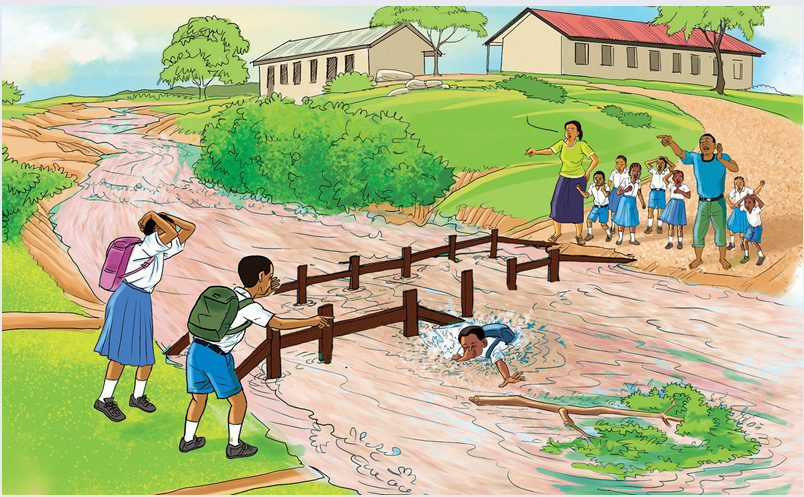

cha maji yaliyokuwa yanapita juu ya daraja na kuamua kuuvuka mto. Alipofika katikati ya daraja, maji yalimzidi nguvu na kumsomba kuelekea bondeni. Ndekia alijaribu kuogelea ili kujiokoa. Wanafunzi wenzake waliokuwa pembeni walianza kupiga kelele, “Ndekiaa! Ndekiaaa! Shika huo mti unaoelea.” Ndekia alishika tawi la mti uliokuwa ukielea. Sauti ya mwanafunzi mwingine aitwaye Huruma ilisikiwa, “Ndekia, inua kichwa juu shikilia vizuri hilo tawi la mti na usikaze mwili wako.” Ndekia alifuata maelekezo aliyopewa na Huruma. Wanafunzi wengine walikuwa wakipiga mayowe wakiomba msaada.

Mti uliokuwa ukielekea bondeni ulikwama kwenye mbuyu ulioangukia mtoni. Ndekia aliendelea kushikilia tawi la mti. Watu walianza kusogea darajani. Kijana aitwaye Chacha alijitosa mtoni kumuokoa. Alipiga mbizi na kuibukia pale alipokuwa Ndekia. Alimkamata vizuri Ndekia na kuogelea naye hadi ukingoni mwa mto. Baada ya kuokolewa, Ndekia alilazwa kifudifudi na kuminywa mgongoni ili maji yatoke. Baadaye, alipelekwa zahanati kwa ajili ya kupatiwa matibabu zaidi.
Mwalimu Sara alikuwa zamu siku hiyo. Aliwatangazia wanafunzi wasiendes kwenye eneo la mto lililojaa maji. Mwalimu Mbilo na wanafunzi waliokuwa wakiishi ng’ambo ya mto hawakuweza kufika